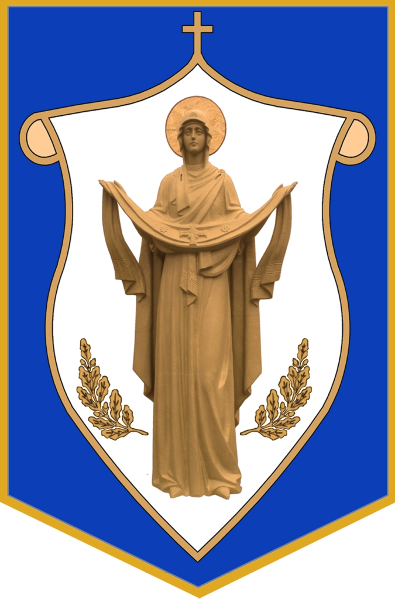
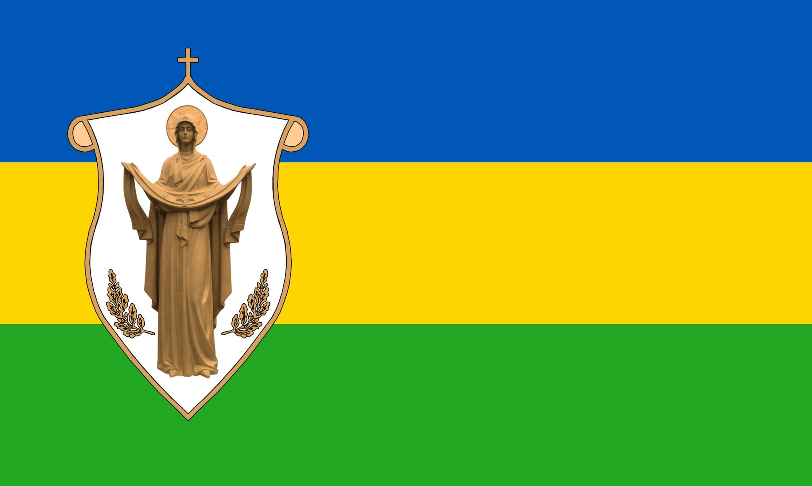

Visitez l'oblast de Kiev - Novi Petrivtsi
Visitez l'oblast de Kiev - Novi Petrivtsi

Héraldique

Drapeau
la description de la ville
Novi Petrivtsi est un village du raïon de Vychhorod, dans l'oblast de Kyiv. La zone historique de Mezhyhirya est située sur le territoire du village.
Selon le livre de Lavrenty Pokhilevich « Légendes sur les zones habitées de la province de Kiev », l'époque de la fondation du village doit être attribuée à la période de plus grande prospérité du monastère de Mezhyhirya. A cette époque, il fut décidé de créer un village à proximité afin d'avoir une main d'oeuvre à proximité et de ne pas avoir à se tourner vers les villages environnants pour les paysans. Le village a été nommé Novy Petrivtsy en raison de sa proximité avec Stary Petrivtsy, qui à cette époque s'appelait Petrivtsy dans les références chroniques.
Les endroits à visiter
- Mezhyhiria
- L'église de l'Intercession
- Musée-réserve national « Bataille de Kyiv en 1943 »


Gallerie